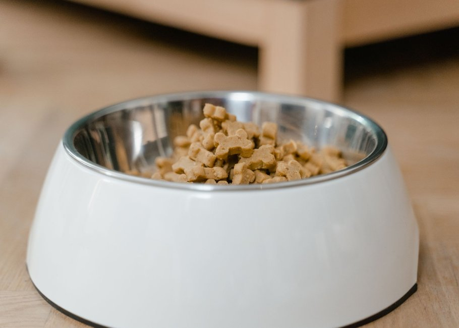

Les aliments adaptés pour une alimentation équilibrée de votre nouvel animal

Photo: MART PRODUCTION / Pexels
Bien nourrir un animal consiste à lui donner le bon aliment, en bonne quantité, et à éviter ce qui est dangereux pour lui. Voici les repères à connaître avant de remplir la première gamelle.
Choisir un aliment complet et équilibré
Pour un chien ou un chat, la base est un aliment commercial qui précise qu'il est complet et équilibré et qui correspond à son stade de vie : chiot ou chaton, adulte, senior. Les jeunes en croissance ont besoin d'un aliment conçu pour eux. Ne donnez jamais de nourriture pour chien à un chat : les chats sont des carnivores stricts, et leur aliment doit contenir des nutriments comme la taurine (un acide aminé) en quantité suffisante.
Mesurer les portions
L'emballage donne une quantité selon le poids. Utilisez une tasse à mesurer ou une balance, répartissez en deux repas par jour pour un adulte (plus pour un jeune) et ajustez avec votre vétérinaire selon la silhouette de l'animal. L'excès de poids est un problème fréquent et réduit la durée de vie.
L'eau
Laissez de l'eau fraîche et propre en tout temps, et lavez la gamelle chaque jour. Si votre animal se met à boire beaucoup plus que d'habitude, consultez un vétérinaire.
Les friandises
Elles ne doivent représenter qu'une petite part de l'alimentation quotidienne, environ 10 % au maximum. Utilisez-les pour récompenser lors de l'apprentissage, en petits morceaux.
Les aliments dangereux
- chocolat, café et boissons à la caféine ;
- raisins et raisins secs ;
- oignon, ail, ciboulette et poireau ;
- xylitol (un édulcorant présent dans des gommes et des produits sans sucre) ;
- alcool, pâte à pain crue, noix de macadamia ;
- os cuits, qui se brisent en éclats.
Si votre animal en a mangé, appelez tout de suite votre vétérinaire ou un centre antipoison pour animaux.
Changer d'aliment
Faites la transition sur 7 à 10 jours en mélangeant de plus en plus de nouvel aliment à l'ancien, pour éviter les troubles digestifs.
Les régimes faits maison
Un régime maison, cru ou sans céréales demande l'avis d'un vétérinaire : un mauvais équilibre peut causer des carences graves.
Quand consulter
Parlez-en à votre vétérinaire pour choisir l'aliment, les portions et les besoins particuliers de votre animal, et consultez sans attendre en cas de perte d'appétit prolongée, de vomissements ou de diarrhée persistante.
Produits recommandés
En tant que Partenaire Amazon, je réalise un bénéfice sur les achats remplissant les conditions requises.